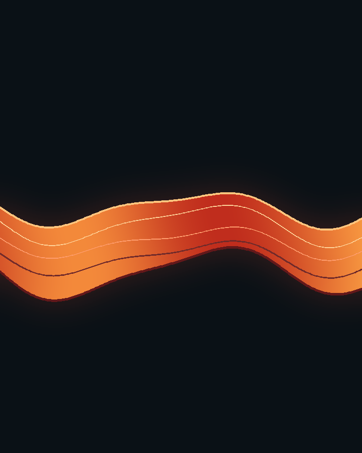
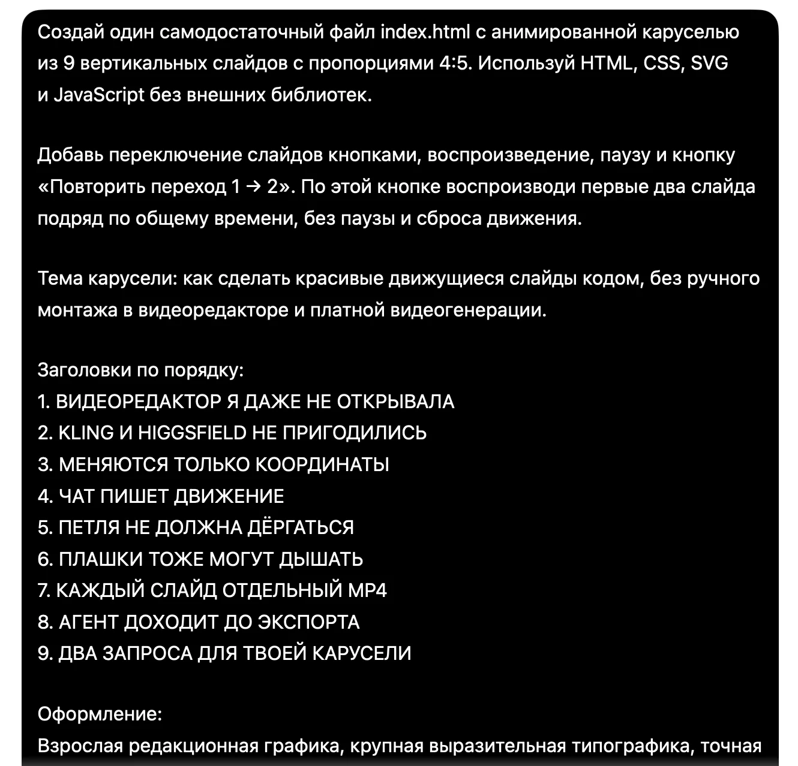
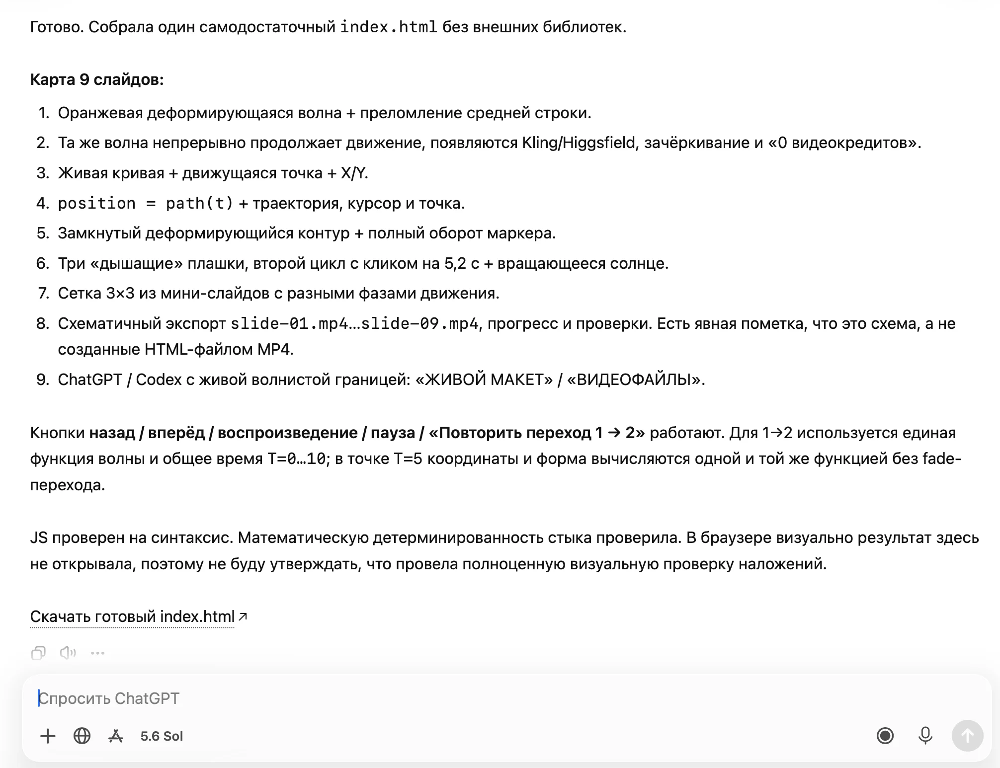
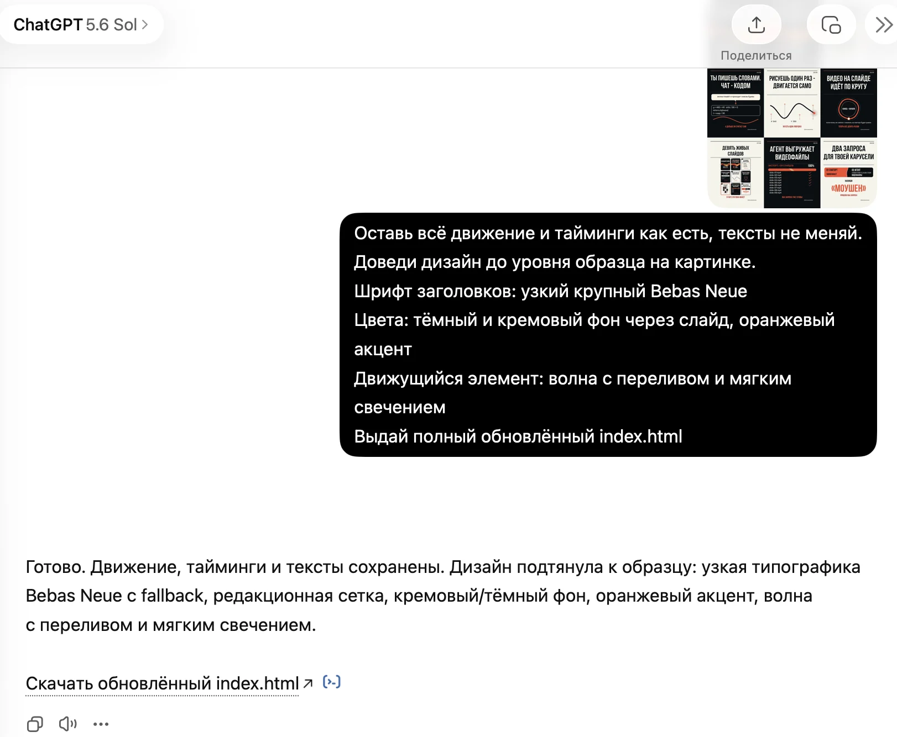
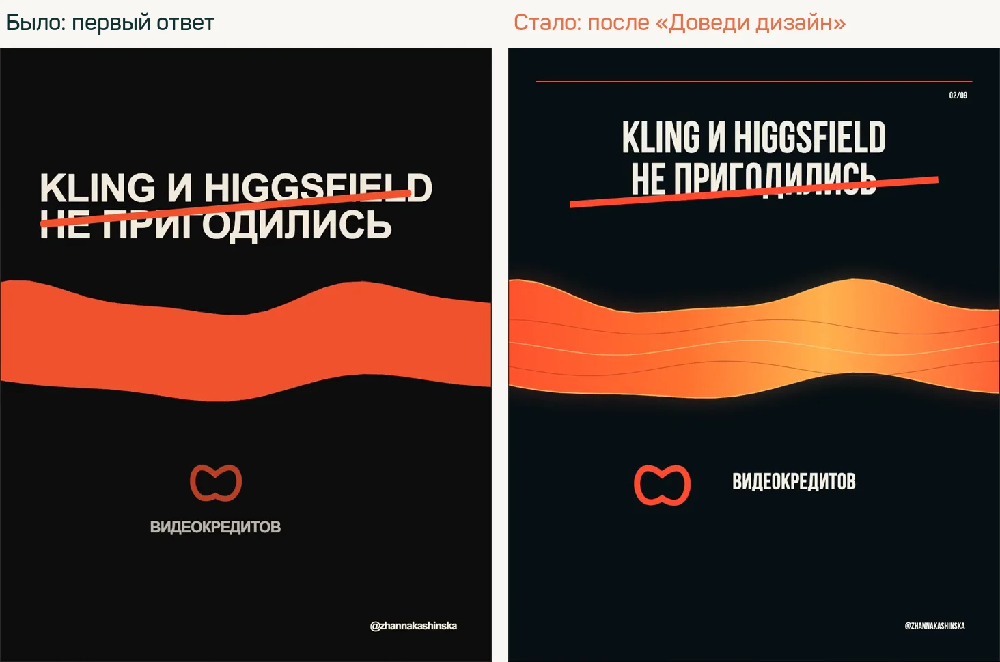
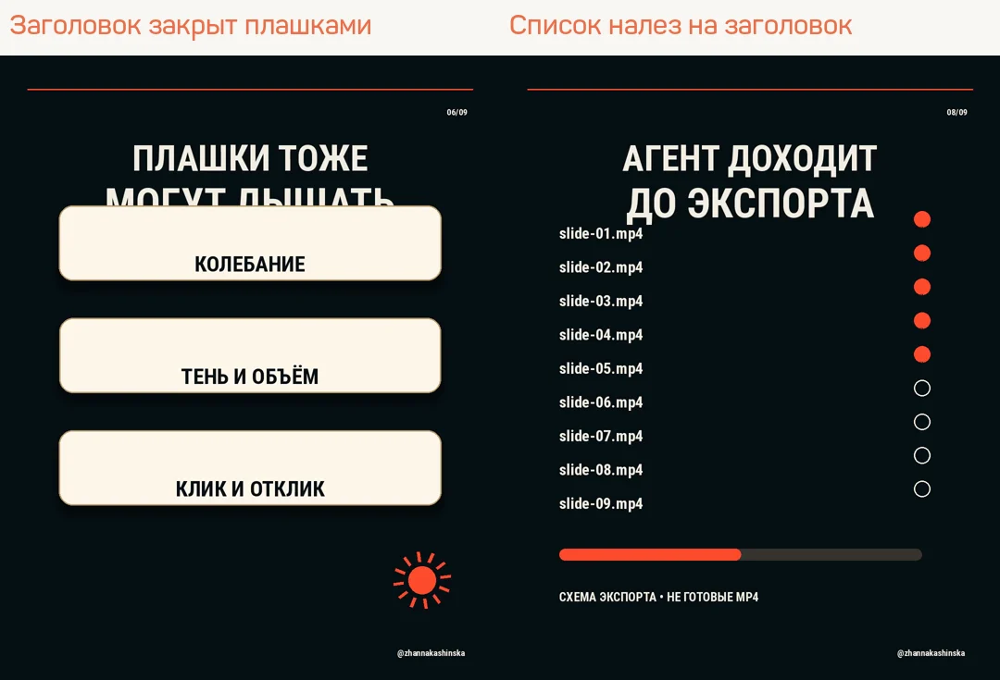
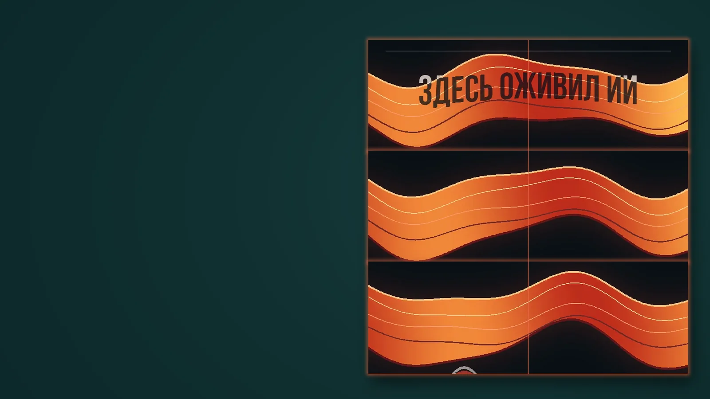

ИНСТРУКЦИЯ · АНИМИРОВАННАЯ КАРУСЕЛЬ

Как сделать движущиеся слайды в карусели
Средний уровень
Хочешь оживить карусель, но каждый слайд приходится отдельно собирать в видеоредакторе, а при перелистывании линия или волна перескакивает на другое место? Как сделать так, чтобы движение продолжалось плавно?
Можно поручить нейросети нарисовать движение кодом: она задаст, как меняются линии, буквы и плашки, и свяжет соседние слайды. Ниже живой пример и два пути для твоей карусели: макет в ChatGPT или видеофайлы через агента
Содержание инструкции
Посмотри, как движутся слайдыЧто нужно заранееПодготовь содержание своей каруселиКак это сделать: два путиЕсли движение скачет между слайдамиПроверь перед загрузкой каруселиПосмотри, как движутся слайды
В примере ниже волна проходит через буквы и продолжает движение на следующем слайде. Во втором видео три плашки мягко дышат, а нижняя реагирует на нажатие. Это уже собранные видео: их можно посмотреть прямо здесь
Что должно совпадать на переходе
У движущегося элемента в конце первого слайда и начале второго должны совпасть высота, форма, размер и цвет. По вертикали это координата Y, по горизонтали X. Само движение продолжает идти в прежнюю сторону

Конец слайда 1Начало слайда 2При ручном перелистывании в Нельзяграме соседние видео могут запускаться в разные моменты. Совпадение конца и начала убирает скачок в рассчитанной точке перехода, но не синхронизирует любой произвольный свайп. В HTML-превью два слайда можно воспроизвести подряд по одному времени
Что нужно заранее
Плагины, скиллы и подключения для этой работы не нужны. Хватает обычного чата или агента и пары бесплатных программ на компьютере
Для обоих путей
- Образец дизайна: картинка слайда, который тебе нравится, свой фирменный или чужой для ориентира. Без образца и ChatGPT, и агент делают простое оформление со стандартным шрифтом, это видно в примерах ниже
- Тексты слайдов по порядку и тема карусели
Для пути через ChatGPT
- Аккаунт ChatGPT
- Чат должен уметь отдавать файлы: в ответе появляется ссылка вида «Скачать index.html». Если ссылки нет, сохрани код из ответа вручную, как описано в шаге «Сохрани и открой результат»
Проверено в ChatGPT на подписке Pro, модель 5.6 Sol. На бесплатном тарифе HTML-макет получится: код можно сохранить вручную. А видеофайлы прямо в чате (как их получить) могут не выйти из-за лимитов на запуск кода. На этот случай ниже есть два запасных пути: запись экрана и агент
Для пути через агента
- Агент на компьютере: Codex или Claude Code
- Python 3 с библиотеками Pillow и NumPy: ими агент рисует кадры
- FFmpeg: им агент склеивает кадры в MP4
Как поставить Python, Pillow, NumPy и FFmpeg
Проще всего поручить это самому агенту. Открой в нём любую папку и отправь запрос:
Проверь, есть ли на этом компьютере Python 3, библиотеки Pillow и NumPy и программа FFmpeg. Чего не хватает, установи и покажи версии всех четырёх. Если для установки нужен мой пароль или подтверждение, скажи, что именно нажать
Если хочешь поставить руками:
- Mac: поставь Homebrew, затем в Терминале выполни
brew install python ffmpegиpython3 -m pip install pillow numpy - Windows: в PowerShell выполни
winget install Python.Python.3.12иwinget install Gyan.FFmpeg, затем перезапусти PowerShell и выполниpy -m pip install pillow numpy
Результат: агент показывает версии Python, Pillow, NumPy и FFmpeg без ошибок
Подготовь содержание своей карусели
Перед запросом подготовь тему и готовый текст каждого слайда. Потом придумай, что будет двигаться и переходить со слайда на слайд: волна, линия или кольцо. Для первого раза хватит, чтобы оно перетекало с первого слайда на второй, а остальные слайды пусть будут в том же стиле
Что заменить в запросах
Каждое место в квадратных скобках заполни своими словами, вместе со скобками. Например, вместо [здесь напиши, о чём твоя карусель и кому она нужна] вставь: «Пять ошибок при уходе за комнатными растениями, для новичков»
В поле оформления можно написать: «Кремовый фон, тёмно-зелёные буквы, оранжевая линия». Если есть фирменный образец, приложи его к сообщению
Результат: у тебя есть содержание слайдов и понятное описание движения, которое ты хочешь увидеть
Как это сделать: два пути
1. Через ChatGPT
Этот путь подходит, если хочешь сначала увидеть идею в браузере. На выходе нужен HTML: файл со страницей, которая показывает анимацию. Для публикации видео-слайдов затем понадобится экспорт в MP4, отдельный видеофайл для каждого слайда
Открой чат и отправь запрос
Открой ChatGPT, начни новый чат и вставь запрос ниже. Замени подсказки в квадратных скобках на свои данные. Если хочешь сохранить определённый стиль, приложи образец к тому же сообщению
Создай один самодостаточный index.html с анимированной каруселью. Используй HTML, CSS, SVG и JavaScript без внешних библиотек. Добавь кнопки переключения слайдов, воспроизведения, паузы и повтора перехода. Каждый слайд вертикальный, пропорции 4:5. При повторе перехода воспроизведи первые два слайда подряд по общему времени без разрыва. Тема: [здесь напиши, о чём твоя карусель и кому она нужна] Тексты по слайдам: [здесь вставь заголовок и короткий текст каждого слайда по порядку] Количество слайдов: [здесь укажи число слайдов] Оформление: [здесь опиши цвета, шрифт и настроение или приложи свой образец] Главный движущийся элемент: [здесь опиши волну, линию, кольцо или другую форму] Подпись автора: [здесь вставь свой ник или напиши «без подписи»] Сохраняй одну сетку, крупный читаемый текст и свободные поля. У каждого слайда одно главное действие. Текст не должен закрываться движущейся графикой. Первые два слайда свяжи одним движущимся элементом. Сделай их частями одной общей сцены: первый от 0 до 5 секунд, второй от 5 до 10 секунд. На границе T=5 должны совпасть форма, размер, цвет и координаты по X и Y. Продолжай движение в том же направлении и с той же скоростью, без сброса фазы. Не скрывай скачок затуханием или сменой картинки. Остальные слайды сделай плавно зацикленными по 5 секунд. Если есть слайд с дыханием плашек, сделай его длиной 7,2 секунды: два цикла по 3,6 секунды, равномерный масштаб от 1 до 1.035 и обратно, тонкая синхронная тень, сдвиг соседних плашек на 0,4 секунды. Контур и пропорции сохраняются. Во втором цикле на 5,2 секунды указатель нажимает нижнюю плашку: масштаб 0.97, краткая оранжевая заливка, затем возврат цвета и дыхания. Смысл раскрывай по нарастанию: начало открывает вопрос, следующие слайды добавляют пользу, последний даёт ответ. Сначала покажи карту слайдов и пробную связанную пару, чтобы оценить движение до сборки всей карусели. После согласования пробной пары выдай полный код без сокращений. Если можешь прикреплять файлы, приложи index.html. Иначе выдай код одним блоком и объясни, как сохранить его в файл index.html. HTML должен открываться в браузере. Не называй HTML видеофайлом MP4.
Сохрани и открой результат
Если чат прикрепил index.html, скачай файл и открой его двойным щелчком в браузере. Если он выдал только код, скопируй код в текстовый редактор, включи режим обычного текста и сохрани файл с именем index.html. Проверь, что имя не заканчивается на .txt
Нажми воспроизведение перехода первых двух слайдов. Если вместо анимации браузер показывает текст кода, проверь расширение файла. Если макет открывается, но движение не работает, вернись в тот же чат, опиши, что видишь, и попроси исправленный полный файл
Результат: в браузере открывается твоя карусель, слайды движутся, переход можно повторить и поставить на паузу
Как это выглядит на деле
Ниже пример: такой запрос отправлен в ChatGPT с темой этой карусели. Чат собрал файл и дал ссылку на скачивание. Сам он честно пишет, что в браузере результат не открывал, поэтому движение нужно проверить в браузере


Это первый вариант, а не предел. С одного запроса ChatGPT собрал всё движение, а оформление вышло простым: стандартный шрифт, плоская волна. Дальше в том же чате доводишь дизайн
Доведи дизайн в том же чате
Приложи к сообщению картинку-образец: свой фирменный слайд или дизайн, который нравится. Отправь запрос ниже, подсказки в скобках замени своими словами
Оставь всё движение и тайминги как есть, тексты не меняй. Доведи дизайн до уровня образца на картинке. Шрифт заголовков: [здесь назови шрифт, например узкий крупный Bebas Neue] Цвета: [здесь опиши фон и акцентный цвет, например тёмный и кремовый фон через слайд, оранжевый акцент] Движущийся элемент: [здесь опиши, каким он должен стать, например волна с переливом и мягким свечением] Выдай полный обновлённый index.html
Результат: движение то же, оформление как на твоём образце. Если что-то сломалось, напиши в том же чате, что именно видишь
Пример: к запросу приложена картинка с готовыми слайдами, в скобках указаны шрифт и цвета. Чат прислал обновлённый файл, движение осталось прежним


Попроси видеофайлы прямо в чате
ChatGPT может сам сохранить каждый слайд отдельным MP4. В проверке на этой карусели с первого раза он прислал 9 файлов правильной длины, но в каждом вместо слайда был белый экран с надписью «"file" links are blocked». Его браузер не загрузил страницу, а снаружи файлы выглядели нормально. Поэтому сразу проси рисовать кадры без браузера и показать их до выдачи
Сохрани каждый слайд отдельным MP4: 1080x1350, 30 кадров в секунду, без звука, длительность как в index.html. Отрисуй кадры без браузера, например в Python, по тем же формулам движения из index.html. Последний кадр слайда 1 и первый кадр слайда 2 должны совпасть. Перед выдачей покажи мне картинками по 3 кадра из каждого видео и проверь, что текст не перекрывается графикой
Со второй попытки чат прислал настоящие видео: волна прошла стык слайдов 1 и 2 без скачка, петли повторяются ровно. Но при перерисовке поехала вёрстка: на двух слайдах графика наехала на заголовок

Результат: у тебя отдельный MP4 на каждый слайд. Перед загрузкой открой каждое видео и посмотри, не закрыт ли текст. Если закрыт, опиши в том же чате, на каком слайде и что наехало, и попроси пересобрать только его
Запасной путь: запиши слайды с экрана
Если чат не справился с видео, их можно снять с экрана: открой index.html в браузере, выбери слайд и запусти воспроизведение
- Mac: нажми Cmd+Shift+5, выбери «Записать выбранную область» и поставь рамку точно по слайду
- Windows 11: открой «Ножницы» сочетанием Win+Shift+R и выдели слайд
- Запиши чуть дольше одного круга движения, лишнее обрежь во встроенном редакторе. На Mac это QuickTime: «Правка» → «Обрезать»
Запись экрана зависит от монитора, а начало и конец петли совпадают только примерно. Если нужны чистые файлы 1080x1350 и точный стык, это работа для агента

2. Через агента
Этот путь подходит, если пользуешься Codex или Claude Code на компьютере и хочешь получить отдельные MP4. Агент здесь означает программу, которая может писать файлы в выбранную папку и запускать сборку
Открой папку и поставь задачу
Создай отдельную папку для новой карусели и открой её в Codex или Claude Code. В чате этой папки отправь запрос ниже. Заполни квадратные скобки и приложи образец оформления, если он есть
Собери анимированную карусель в открытой папке проекта. Нужны отдельные видеофайлы для слайдов и HTML-превью, в котором можно посмотреть переход первых двух слайдов и поставить анимацию на паузу. Тема: [здесь напиши, о чём твоя карусель и кому она нужна] Тексты по слайдам: [здесь вставь заголовок и короткий текст каждого слайда по порядку] Количество слайдов: [здесь укажи число слайдов] Оформление: [здесь опиши цвета, шрифт и настроение или приложи свой образец] Главный движущийся элемент: [здесь опиши волну, линию, кольцо или другую форму] Подпись автора: [здесь вставь свой ник или напиши «без подписи»] Сохраняй одну сетку, крупный читаемый текст и свободные поля. У каждого слайда одно главное действие. Текст не должен закрываться движущейся графикой. Первые два слайда свяжи одним движущимся элементом. Сделай их частями одной общей сцены: первый от 0 до 5 секунд, второй от 5 до 10 секунд. На границе T=5 должны совпасть форма, размер, цвет и координаты по X и Y. Продолжай движение в том же направлении и с той же скоростью, без сброса фазы. Не скрывай скачок затуханием или сменой картинки. Остальные слайды сделай плавно зацикленными по 5 секунд. Если есть слайд с дыханием плашек, сделай его длиной 7,2 секунды: два цикла по 3,6 секунды, равномерный масштаб от 1 до 1.035 и обратно, тонкая синхронная тень, сдвиг соседних плашек на 0,4 секунды. Контур и пропорции сохраняются. Во втором цикле на 5,2 секунды указатель нажимает нижнюю плашку: масштаб 0.97, краткая оранжевая заливка, затем возврат цвета и дыхания. Смысл раскрывай по нарастанию: начало открывает вопрос, следующие слайды добавляют пользу, последний даёт ответ. Сначала покажи карту слайдов и пробную связанную пару, чтобы оценить движение до сборки всей карусели. После согласования пробной пары собери всю серию. Экспортируй каждый слайд отдельно: MP4, H.264, 1080x1350, 30 кадров в секунду, без звука. Для слайда 7,2 секунды нужны 216 кадров, для пятисекундного 150. Сохрани исходники и короткую инструкцию повторного запуска. Проверь граничные состояния первых двух слайдов при общем T=5, а также последний экспортированный кадр первого видео и первый кадр второго. Учитывай шаг времени в 1/30 секунды: движение может продолжаться, но не должно прыгать. Покажи 10-секундную склейку и кадры стыка. Для статичной иллюстрации используй общую граничную форму, чтобы положение элемента не менялось между картинками. Проверь петли, читабельность на телефоне и отсутствие наложений. Открой экспортированные видео, проверь размер, частоту кадров, длительность и отсутствие звука. Покажи мне файлы и превью. Не публикуй их без моего решения.
Сначала оцени связанную пару
Открой пробное видео двух слайдов. Посмотри на переход: элемент продолжает движение или внезапно меняет высоту? Оцени размер текста на телефоне. Если всё подходит, напиши агенту: «Эта пара подходит. Собери остальные слайды в том же стиле»
Если агент сообщает, что не может экспортировать видео, попроси назвать конкретную причину и подготовить HTML-превью. Сохрани исходники и вернись к экспорту после устранения причины. Набор картинок и HTML ещё не заменяют отдельные MP4
Результат: в папке лежит отдельный MP4 для каждого слайда, исходники и HTML-превью. Каждый видеофайл открывается и воспроизводится
Как это выглядит на деле
Этот запрос проверен в Codex в пустой папке на другой теме: «Четыре ошибки при уходе за комнатными растениями», 5 слайдов, кремовый фон, зелёные буквы, оранжевая линия-стебель. Образец оформления не прикладывался. Агент сначала показал пробную пару, после ответа «Эта пара подходит» собрал остальное. Вся работа заняла около 14 минут и два сообщения
Без образца агент выбрал простое оформление. Чтобы получить свой стиль, приложи картинку-образец к первому сообщению или попроси доработать дизайн после пробной пары
Если движение скачет между слайдами
Вернись в тот же чат, где собиралась карусель, и отправь уточнение. Если можешь, приложи кадр конца первого и начала второго видео, чтобы было видно, какой элемент сместился
Исправь переход между первым и вторым слайдами. В конце первого и начале второго главный элемент должен иметь одну форму, цвет, размер и координаты по X и Y. Не поднимай и не опускай его на следующем слайде. Используй одно общее время для обоих слайдов, сохрани направление и скорость. Покажи общую граничную форму и воспроизведение двух слайдов подряд. Если в самих видео переход уже правильный, замени только иллюстрацию на кадры стыка, а не на случайные кадры из середины.
После исправления снова проиграй пару подряд. Совпадение высоты на двух картинках само по себе недостаточно: форма и направление движения тоже должны сохраняться
Результат: на переходе элемент не подпрыгивает, не меняет размер и продолжает движение
Проверь перед загрузкой карусели
Открой создание карусели в Нельзяграме и выбери видео в порядке слайдов. Перед публикацией просмотри собранную карусель и вручную перелистни её. Так ты увидишь, как именно приложение запускает соседние видео
Результат: у тебя своя карусель с движущимися слайдами, общим стилем и проверенным переходом
Начни с одной связанной пары. Когда переход получается плавным, тот же запрос можно адаптировать под следующую тему, заменив содержание и оформление в квадратных скобках
Карусель ожила. А следующую кто сделает?
Инструкция пройдена. А как сделать, чтобы нейросети приводили клиентов?
Концентрат - онлайн-мероприятие Ивана Сергеева по вайбмаркетингу: 13-15 октября, 19:00 по Москве. Участие бесплатное, регистрация на сайте до 14 октября
ЗарегистрироватьсяРеклама. ИП Сергеев И. С., ИНН 352511695540. erid: